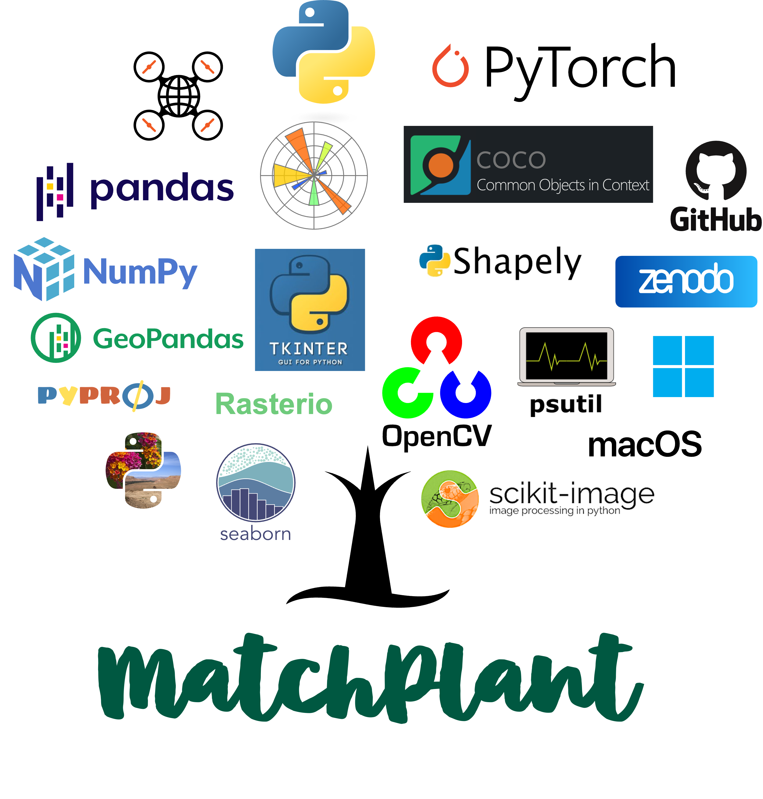

MatchPlant Dashboard
A local front end for running the MatchPlant pipeline. Launch each module and watch its output, all on your own computer.
Reference: Sangjan, W., Pandey, P., Best, N. B., & Washburn, J. D. (2026). MatchPlant: An Open-Source Pipeline for UAV-Based Single-Plant Detection from Undistorted Images with Orthomosaic Projection. Smart Agricultural Technology, 15, 102421. https://doi.org/10.1016/j.atech.2026.102421
Looking for a dashboard running on this computer…
Status: No dashboard found running on this computer yet.
First time here?
- Download the dashboard from
MatchPlant-Dashboard on GitHub.
Link: Download ZIP - Unzip it, then double-click the setup file. One-time only.
- Mac:
setup.command - Windows:
setup.bat
- Mac:
- Double-click the start file to start the dashboard. Do this
every time you want to use it.
- Mac:
start_dashboard.command - Windows:
start_dashboard.bat
- Mac:
Step 3 opens the dashboard automatically. If it doesn't, reload this page, or open http://127.0.0.1:5050 yourself.
Found it. Opening your dashboard…